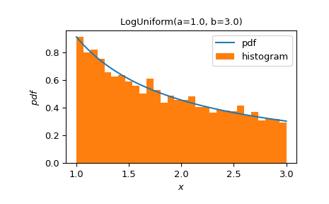

make_distribution#
- scipy.stats.make_distribution(dist)[source]#
Generate a UnivariateDistribution class from a compatible object.
The argument may be an instance of
rv_continuous,rv_discrete, or an instance of another class that satisfies the interface described below.The returned value is a ContinuousDistribution subclass if the input defines a
pdfmethod or a DiscreteDistribution subclass if the input defines apmfmethod. Like any subclass of UnivariateDistribution, it must be instantiated (i.e. by passing all shape parameters as keyword arguments) before use. Once instantiated, the resulting object will have the same interface as any other instance of UnivariateDistribution; e.g.,scipy.stats.Normal,scipy.stats.Binomial.Note
make_distributiondoes not work perfectly with all instances ofrv_continuousorrv_discrete. Known failures includelevy_stable,vonmises,hypergeom, ‘nchypergeom_fisher’, ‘nchypergeom_wallenius’, andpoisson_binom. Some methods of some distributions will not support array shape parameters.- Parameters:
- dist
rv_continuous Instance of
rv_continuous,rv_discrete, or an instance of any custom class with the following attributes:- __make_distribution_version__str
A string containing the version number of SciPy in which this interface is defined. The preferred interface may change in future SciPy versions, in which case support for an old interface version may be deprecated and eventually removed.
- parametersdict or tuple
If a dictionary, each key is the name of a parameter, and the corresponding value is either a dictionary or tuple. If the value is a dictionary, it may have the following items, with default values used for entries which aren’t present.
- domain_type{‘continuous’, ‘discrete’}, default: ‘continuous’
A string identifying whether the domain of the parameter is continuous or discrete (i.e. accepts only integral values).
- endpointstuple, default: (-inf, inf)
A tuple defining the lower and upper endpoints of the domain of the parameter; allowable values are floats, the name (string) of another parameter, or a callable taking parameters as keyword only arguments and returning the numerical value of an endpoint for given parameter values.
- inclusivetuple of bool, default: (False, False)
A tuple specifying whether the endpoints are included within the domain of the parameter.
- typicaltuple, default:
endpoints Defining endpoints of a typical range of values of a parameter. Can be used for sampling parameter values for testing. Behaves like the
endpointstuple above, and should define a subinterval of the domain given byendpoints.
A tuple value
(a, b)associated to a key in theparametersdictionary is equivalent to{endpoints: (a, b)}.Custom distributions with multiple parameterizations can be defined by having the
parametersattribute be a tuple of dictionaries with the structure described above. In this case,dist’s class must also define a methodprocess_parametersto map between the different parameterizations. It must take all parameters from all parameterizations as optional keyword arguments and return a dictionary mapping parameters to values, filling in values from other parameterizations using values from the supplied parameterization. See example.- supportdict or tuple
A dictionary describing the support of the distribution or a tuple describing the endpoints of the support. This behaves identically to the values of the parameters dict described above. (
domain_typeis inferred from whetherpdforpmfis defined.)
The class must also define a
pdfORpmfmethod - not both - and this determines whether the support of the distribution is continuous or discrete (i.e. accepts only integral values). It may define methodslogentropy,entropy,median,mode,logpdf,logpmf,logcdf,cdf,logccdf,ccdf,ilogcdf,icdf,ilogccdf,iccdf,moment,lmoment, andsample. If defined, these methods must accept the parameters of the distribution as keyword arguments and also accept any positional-only arguments accepted by the corresponding method of ContinuousDistribution/DiscreteDistribution. When multiple parameterizations are defined, these methods must accept all parameters from all parameterizations. Themomentmethod must accept theorderandkindarguments by position or keyword, but may returnNoneif a formula is not available for the arguments; in this case, the infrastructure will fall back to a default implementation. Thelmomentmethod must accept theorderargument by position or keyword and return the specified L-moment (not the L-moment ratio), but may returnNoneif a formula is not available for the arguments. Thesamplemethod must acceptshapeby position or keyword, but contrary to the public method of the same name, the argument it receives will be the full shape of the output array - that is, the shape passed to the public method prepended to the broadcasted shape of random variable parameters.
- dist
- Returns:
- CustomDistributionUnivariateDistribution
A subclass of UnivariateDistribution corresponding with dist. The initializer requires all shape parameters to be passed as keyword arguments (using the same names as the instance of
rv_continuous/rv_discrete).
Notes
The documentation of UnivariateDistribution is not rendered. See below for an example of how to instantiate the class (i.e. pass all shape parameters of dist to the initializer as keyword arguments). Documentation of all methods is identical to that of
scipy.stats.Normal. Usehelpon the returned class or its methods for more information.Examples
>>> import numpy as np >>> import matplotlib.pyplot as plt >>> from scipy import stats, special
Create a ContinuousDistribution from
scipy.stats.loguniform.>>> LogUniform = stats.make_distribution(stats.loguniform) >>> X = LogUniform(a=1.0, b=3.0) >>> np.isclose((X + 0.25).median(), stats.loguniform.ppf(0.5, 1, 3, loc=0.25)) np.True_ >>> X.plot() >>> sample = X.sample(10000, rng=np.random.default_rng()) >>> plt.hist(sample, density=True, bins=30) >>> plt.legend(('pdf', 'histogram')) >>> plt.show()

Create a custom continuous distribution.
>>> class MyLogUniform: ... @property ... def __make_distribution_version__(self): ... return "1.16.0" ... ... @property ... def parameters(self): ... return {'a': {'endpoints': (0, np.inf), ... 'inclusive': (False, False)}, ... 'b': {'endpoints': ('a', np.inf), ... 'inclusive': (False, False)}} ... ... @property ... def support(self): ... return {'endpoints': ('a', 'b'), 'inclusive': (True, True)} ... ... def pdf(self, x, a, b): ... return 1 / (x * (np.log(b)- np.log(a))) >>> >>> MyLogUniform = stats.make_distribution(MyLogUniform()) >>> Y = MyLogUniform(a=1.0, b=3.0) >>> np.isclose(Y.cdf(2.), X.cdf(2.)) np.True_
Create a custom distribution with variable support.
>>> class MyUniformCube: ... @property ... def __make_distribution_version__(self): ... return "1.16.0" ... ... @property ... def parameters(self): ... return {"a": (-np.inf, np.inf), ... "b": {'endpoints':('a', np.inf), 'inclusive':(True, False)}} ... ... @property ... def support(self): ... def left(*, a, b): ... return a**3 ... ... def right(*, a, b): ... return b**3 ... return (left, right) ... ... def pdf(self, x, *, a, b): ... return 1 / (3*(b - a)*np.cbrt(x)**2) ... ... def cdf(self, x, *, a, b): ... return (np.cbrt(x) - a) / (b - a) >>> >>> MyUniformCube = stats.make_distribution(MyUniformCube()) >>> X = MyUniformCube(a=-2, b=2) >>> Y = stats.Uniform(a=-2, b=2)**3 >>> X.support() (-8.0, 8.0) >>> np.isclose(X.cdf(2.1), Y.cdf(2.1)) np.True_
Create a custom distribution with multiple parameterizations. Here we create a custom version of the beta distribution that has an alternative parameterization in terms of the mean
muand a dispersion parameternu.>>> class MyBeta: ... @property ... def __make_distribution_version__(self): ... return "1.16.0" ... ... @property ... def parameters(self): ... return ({"a": (0, np.inf), "b": (0, np.inf)}, ... {"mu": (0, 1), "nu": (0, np.inf)}) ... ... def process_parameters(self, a=None, b=None, mu=None, nu=None): ... if a is not None and b is not None: ... nu = a + b ... mu = a / nu ... else: ... a = mu * nu ... b = nu - a ... return dict(a=a, b=b, mu=mu, nu=nu) ... ... @property ... def support(self): ... return {'endpoints': (0, 1)} ... ... def pdf(self, x, a, b, mu, nu): ... return special._ufuncs._beta_pdf(x, a, b) ... ... def cdf(self, x, a, b, mu, nu): ... return special.betainc(a, b, x) >>> >>> MyBeta = stats.make_distribution(MyBeta()) >>> X = MyBeta(a=2.0, b=2.0) >>> Y = MyBeta(mu=0.5, nu=4.0) >>> np.isclose(X.pdf(0.3), Y.pdf(0.3)) np.True_
Create a custom discrete distribution with one continuous shape parameter and one discrete shape parameter.
>>> class MyBinomial: ... @property ... def __make_distribution_version__(self): ... return "1.16.0" ... ... @property ... def parameters(self): ... return {'n': {'domain_type': 'discrete', ... 'endpoints': (0., np.inf), ... 'inclusive': (True, False)}, ... 'p': {'domain_type': 'continuous', ... 'endpoints': (0., 1.), ... 'inclusive': (True, True)}} ... ... @property ... def support(self): ... return {'endpoints': (0, 'n'), 'inclusive': (True, True)} ... ... def pmf(self, x, n, p): ... return special.binom(n, x) * p**x * (1 - p)**(n-x) >>> >>> MyBinomial = stats.make_distribution(MyBinomial()) >>> X = stats.Binomial(n=10, p=0.4) >>> Y = MyBinomial(n=10, p=0.4) >>> np.isclose(Y.cdf(8.), X.cdf(8.)) np.True_